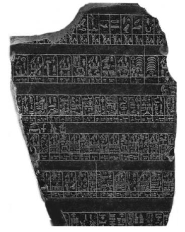
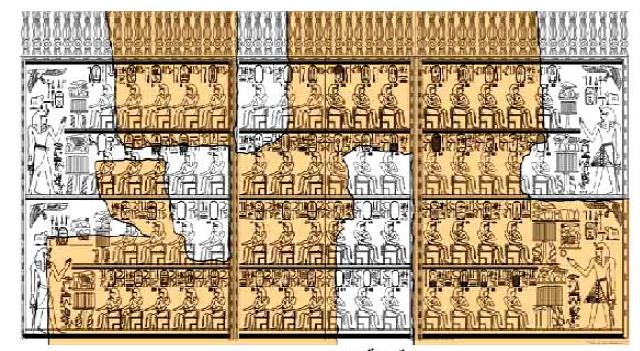
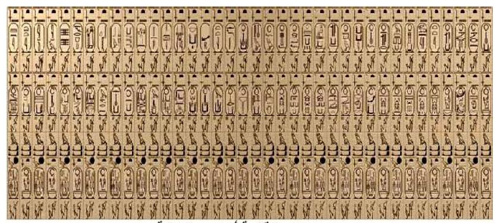
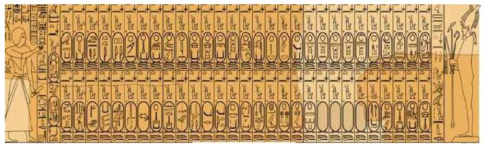
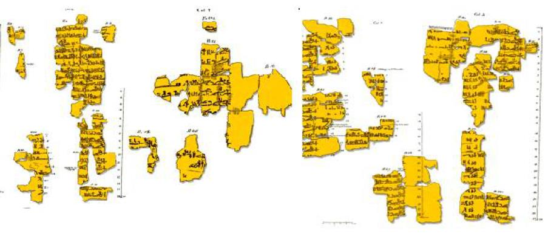

منهجية البحث: الرافدان الرئيسيان والمصادر المساعدة
تعتمد المنهجية الأكاديمية لدراسة تاريخ مصر القديمة على رافدين رئيسيين، مع تحول تاريخي كبير في وزنهما العلمي:
١. الآثار المصرية (المصادر المادية والمكتوبة)
تُجمع الآراء الأكاديمية اليوم على اعتبار «الآثار المصرية الثابتة والمنقولة» هي المصدر الرئيسي والأول بلا منازع؛ لكونها نصوصاً وشواهد معاصرة كُتبت بأيدي صناع الحضارة أنفسهم.
⭐ احتلت الصدارة المطلقة منذ القرن التاسع عشر بعد فك رموز حجر رشيد وترجمة النصوص الهيروغليفية.٢. كتابات المؤرخين الكلاسيكيين (الإغريق والرومان)
كانت كتاباتهم هي المصدر الوحيد المتاح لأوروبا لقرون طويلة، لكن تضاءلت أهميتها النسبية وتراجعت إلى المرتبة الثانية بعد قراءة النصوص المصرية الأصلية ومقارنتها بما دوّنه الرحالة الأجانب.
⚠️ شابتها أخطاء فادحة بسبب الجهل باللغة والاعتماد على الروايات الشفوية.🔍 المصادر المساعدة (مصادر تكميلية تضيء جوانب مهمة):
الآثار المصرية وتطور التدوين التاريخي
أصدق الشواهد المعاصرة ومسألة «الذاتية»
تُعد الآثار المصرية أدق وأصدق المصادر التاريخية؛ لأنها نصوص وشواهد معاصرة للأحداث كُتبت بأيدي صناع الحضارة أنفسهم. ورغم أن هذه السجلات «لا تخلو من ذاتية» في بعض المواضع (نظراً لكونها تدويناً رسمياً يخضع للتوجه الملكي والديني)، إلا أنها تعد مرآة شاملة عكست شتى مناحي الحياة السياسية، والاقتصادية، والاجتماعية، وخلفت إرثاً أدبياً يُصنف اليوم ضمن روائع الأدب العالمي.
📈 مراحل تطور التدوين التاريخي عند المصريين القدماء:
اقتصر التدوين في فجر التاريخ على تسجيلات موجزة ومختصرة فوق بطاقات عاجية وخشبية صغيرة ترتبط بجرار الزيوت ومقتنيات الملوك لتوثيق السنوات بأهم حدث فيها.
تحول التدوين إلى السرد المفصل على اللوحات الحجرية، وأوراق البردي، وجدران المعابد والمقابر. استهدفت تخليد ذكرى الملوك، ووصف الأعياد، ورصد القرابين، وتوثيق المعارك الحربية الكبرى (مثل معارك تحتمس الثالث، ورمسيس الثاني، ورمسيس الثالث)، وأحداث طرد الهكسوس وتوحيد القطرين.
الحوليات والقوائم الملكية الخمس الكبرى
ما هي القوائم الملكية وما دقتها؟
سجلات دقيقة رصدت سنوات حكم الفراعنة وأبرز أعمالهم، وبلغت مبلغاً مذهلاً من الدقة؛ إذ سجلت فترات الحكم (بالسنة، والشهر، واليوم)، ولم تقتصر على ملوك العصور التاريخية، بل امتدت لتشمل ملوك عصور ما قبل التاريخ والملوك الأسطوريين.
حجر باليرمو (Palermo Stone)
يُعد من أقدم وأهم الوثائق التاريخية التي تعتمد على السرد الحولي المنظم، ويُعتقد أن المؤرخ المصري «مانيتون» قد استعان به أو بنسخ مشابهة له عند كتابة تاريخه.
• تأريخه: يرجع إلى عصر الأسرة الخامسة (عصر بناة الأهرام)، وينتهي باسم الملك «نفر-إير-كا-رع».
• المادة والوصف: حجر البازلت الأسود، طوله الأصلي نحو مترين وارتفاعه 70 سم، تحطم لعدة أجزاء تفرقت في متاحف العالم.
1. متحف باليرمو (إيطاليا): القطعة الأم (عُثر عليها في منف 1859 ونقلت لصقلية 1877).
2. المتحف المصري (القاهرة): 4 قطع (3 من المنيا وواحدة من حفائر منف).
3. متحف جامعة لندن (UCL): قطعة اشتراها فلندرز بتري عام 1910.
4. متحف اللوفر (باريس): قطعة إضافية بمخازن المتحف.

📷 جزء من حجر باليرمو (الوثيقة الحولية المنظمة)قائمة الكرنك (Karnak King List)
أمر بنقشها الملك «تحتمس الثالث» (الأسرة 18، الدولة الحديثة) على جدران معبد الكرنك.

📷 جزء من قائمة الكرنك (منقوشة في معبد الكرنك والآن بمتحف اللوفر)قائمة أبيدوس (Abydos King List)
نُقشت على جدران معبد الملك «سيتي الأول» (الأسرة 19) في أبيدوس بسوهاج. تتكون من 3 صفوف أفقية متراصة تضم 76 ملكاً داخل خراطيش رسمية دون بورتريهات شخصية، حيث يقف سيتي الأول ومعه ابنه وولي عهده (رمسيس الثاني) يقدمان القرابين لأرواح الأجداد العظام.
لم تكن توثيقاً محايداً، بل تعبيراً عن "الشرعية السياسية" من منظور الأسرة 19؛ ولذلك أسقطت عمداً:
- عصور الانقسام والاحتلال: أهملت ملوك الأسرتين 9 و10 (الانتقال الأول)، وملوك الانتقال الثاني وحكام الهكسوس كمغتصبين.
- الخلافات السياسية: إغفال اسم الملكة «حتشبسوت» عن عمد لاعتبارها مغتصبة لعرش تحتمس الثالث.
- المارقون دينياً (حقبة العمارنة): شطبت تماماً الملك «أخناتون» وجميع خلفائه المرتبطين بثورته (سمنخ كارع، توت عنخ آمون، وآي) لاعتبارهم خارجين عن عبادة الآلهة الرسمية، فمُحيت أسماؤهم من سجلات الخلود!

📷 جزء من قائمة أبيدوس (خراطيش الملوك المتراصة في معبد سيتي الأول)قائمة سقارة (Saqqara Tablet)
لوحة بالغة الدلالة؛ تميزت بأنها لم تُنقش داخل معبد ملكي، بل زينت بها مقبرة خاصة لأحد كبار رجال الدولة: الكاهن والمهندس «ثونري» (المشرف على جميع الأعمال الملكية وكاهن القراءة المرتل) في عهد رمسيس الثاني.

📷 جزء من لوحة سقارة (الترتيب العكسي من مقبرة ثونري)بردية تورين (Turin Royal Canon)
تُعد الوثيقة الأهم والأكثر تفصيلاً في رصد التاريخ المصري. كُتبت بالخط الهيراطيقي في عهد رمسيس الثاني، وتتميز بطابعها الأرشيفي والإحصائي المحايد.
• اشتراها القنصل الإيطالي "دروفيتي" عام 1820 بالأقصر، لكنها تكسرت إلى أكثر من 160 قطعة أثناء النقل لإيطاليا.
• توالت جهود شامبليون، ثم النقلة الكبرى للسير «ألان جاردنر» بإعادة ترتيبها وقراءتها. عُثر على أجزاء إضافية عام 2009، ولا يزال نحو نصفها مفقوداً.
• بدأت أعمدتها الأولى بذكر المعبودات والملوك الأسطوريين (أنصاف الآلهة).
• سردت بعد ذلك ملوك العصور التاريخية من الأسرة الأولى وحتى الأسرة 17 بالسنوات والأشهر والأيام.

📷 أجزاء وقصاصات من بردية تورين الملكية (الخط الهيراطيقي)كتابات المؤرخين والرحالة الكلاسيكيين
توافد المؤرخون والرحالة الكلاسيكيون خاصة في العصور المتأخرة بعد استعانة ملوك الأسرة 26 بالمرتزقة والعمال اليونانيين الذين أسسوا مستوطنة «نقراطيس».
⚠️ أسباب القصور والتناقض في كتابات الكلاسيكيين:
- الجهل باللغة المصرية القديمة: مما أوقعهم في أخطاء فادحة عند ترجمة وفهم النصوص والأسماء.
- الزيارة في أوقات الضعف: زاروا مصر وهي تحت الاحتلال أو في فترات تدهورها المتأخر، فانعكس ذلك سلباً على تقييمهم للحضارة مقارنة بعصور ازدهارها.
- الاعتماد على الروايات الشفوية: خاصة من صغار الكهنة والطبقات العامة، فغلب على كتاباتهم طابع الذاتية والأساطير الشعبية بدلاً من التوثيق الموضوعي.
١. مانيتون السمنودي (Manetho)
كاهن ومؤرخ مصري من مدينة سمنود، كلّفه الملك بطلميوس الثاني (~280 ق.م) بكتابة تاريخ مصر باليونانية. اعتمد على سجلات المعابد في كتابه «إيجيبتياكا Aegyptiaca» الذي احترق في مكتبة الإسكندرية ووصلتنا منه مقتطفات عبر يوليوس الإفريقي ويوسيفوس.
٢. هيرودوت (Herodotus)
وُلد في كاريا (~484 ق.م). زار مصر ودوّن مشاهداته في 9 مجلدات. لقبه شيشرون بـ «أبو التاريخ» ووصفه محدثون بـ «أبو الأباطيل». صاحب مقولة "مصر هبة النيل".
٣. ديودور الصقلي (Diodorus)
مؤرخ يوناني زار مصر (~59 ق.م)، ووضع موسوعة عن «التاريخ العام» خصص جزءها الأول لتاريخ وثقافة مصر القديمة، وغطى العالم حتى حملة يوليوس قيصر.
لماذا ندرس تاريخ مصر القديم؟
في عصر طغت فيه التكنولوجيا وتسارعت فيه وتيرة الحياة المادية، قد يظن البعض أن دراسة تاريخ مضى عليه آلاف السنين هو ضرب من "الترف الثقافي". غير أن دراسته هي ضرورة حتمية لاستلهام المثل العليا وإحياء الضمير الحضاري للأمة:
١. العراقة، الديمومة، وصلابة التكوين («تمصير الغزاة»)
حافظت الشخصية المصرية على إطارها العام المتماسك؛ فإما أن يُطرد الغازي تحت وطأة المقاومة، أو يذوب ويتكيف مع معطيات البيئة المصرية معتنقاً مظاهر حضارتها (ظاهرة تمصير الغزاة).
٢. التسامح العقائدي والنزعة الإنسانية
روح متسامحة نبذت التعصب الديني، وتجلى ذلك في احترام المعبودات المحلية المتعددة دون إقصاء مما عصم آثارهم من التخريب، وإدراك حقيقة "حتمية الموت" وترجمتها إلى طاقة عمل وبناء وأخلاق تضمن الخلود.
٣. الريادة والتأثير الإقليمي
تاريخ مصر ليس معزولاً، بل هو القلب النابض لتاريخ الشرق الأدنى القديم؛ وصاغ مفاهيم السياسة والدين والفنون وأثر وتأثر بشعوب الجوار في سياق عالمي رائد.
٤. الهوية والوعي القومي (الرد على الاغتراب)
واجب قومي ورد أمثل على السياسات الاستعمارية التي تعمدت تهميش التاريخ المصري لحساب تواريخ أوروبية لقطع صلة المصريين بجذورهم؛ فإحياء الوعي الأثري يسترد الشخصية المصرية.
بنك الأسئلة واختبار الفهم التفاعلي
اختبر فهمك لمصادر التاريخ والقوائم الملكية (٦ أسئلة دقيقة)
اختر الإجابة لتظهر لك النتيجة والشرح العلمي فوراً.